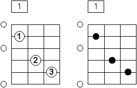

The Box View shows chords and scale blocks in a small section of the fretboard. This leads to a very compact representation of chords and scale blocks. Therefore, the box representation is the most common representation for chords and is preferred in chord and song books.
This view does not only show chords and scale blocks - you can also switch into a edit/search mode. In the edit/search mode you can arrange own fingering patterns and start a reverse calculation to find chords and scales. In order to arrange your fingering just double click on the finger position you want to add or remove.
The toolbar of the Box View contains the following actions:
Here you can switch to the edit/search mode.
In the edit/search mode you can arrange own fingering patterns and start a reverse calculation to find chords and scales.
Note: As long as the view is in the edit/search mode, it is blocked and newly selected chords or scale blocks will not be shown.
This action starts the calculation to determine the corresponding chords of a fingering pattern you have arranged before. This action is only available if it is actually possible that the fingering pattern corresponds to a chord. Therefore, the fingering must contain at least two notes and only one finger position on each string can be defined.
This action starts the calculation to determine the corresponding scales of a fingering pattern you have arranged in the edit/search mode. This action is only available if the fingering pattern contains at least two notes. When you want to find scales it is, of course, possible to define more than one finger position on each string.
Removes a fret from the box. The minumum number of frets is limited to three.
Adds an additional fret to the box. The maximum number of frets is limited to six.
Shows the fingering of the current chord or scale block. Settings regarding the graphical appearance of the fingerings can be specified in the corresponding preferences (see Preferences → Views → Box → Fingering). The alternative representation shows black circles instead of the finger positions.

Shows in an additional info bar the notes of the current chord. Settings regarding the graphical appearance of the notes can be specified in the corresponding preferences (see Preferences → Views → Box → Notes/Intervals).
Shows in an additional info bar the intervals of the current chord. Settings regarding the graphical appearance of the intervals can be specified in the corresponding preferences (see Preferences → Views → Box → Notes/Intervals).
Clears the currently shown input (chord or scale) from this view.
The menu of the Box View contains the following actions:
 Edit/Search Mode
Edit/Search Mode
 Find Chord
Find Chord
 Find Scale
Find Scale
 Remove Fret
Remove Fret
 Add Fret
Add Fret
Show Fingering
 Clear Input
Clear Input
Opens the preferences dialog. The page with the preferences for this view is already pre-selected.
The pop-up menu of this view contains the following actions:
Exports the current representation of the box as an image file. You can specifiy the file name and type (.bmp, .jpg or .png) in a corresponding dialog box. The size of the export image can be defined in the export preferences.
Copies the current representation of the box into the clipboard. The stored image data in the clipboard may be pasted, for instance, into Office applications later on. The size of the image can be defined in the export preferences as well.
Workbench → Preferences → Views → Box
Workbench → Preferences → Export
Tasks → Generate and Show Chords
Tasks → Find Chords
Tasks → Show Scales
Tasks → Find Scales